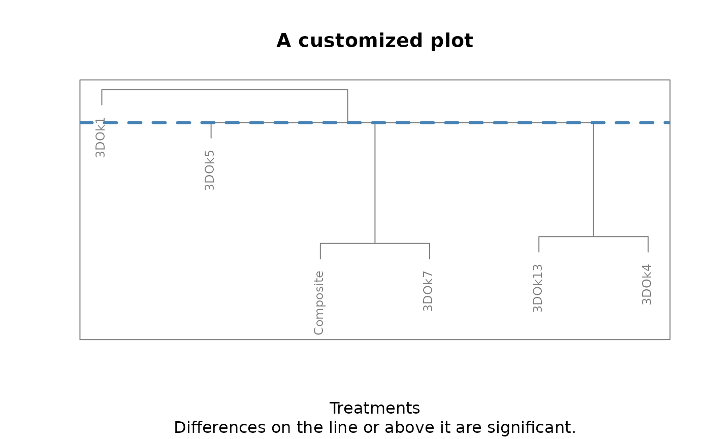
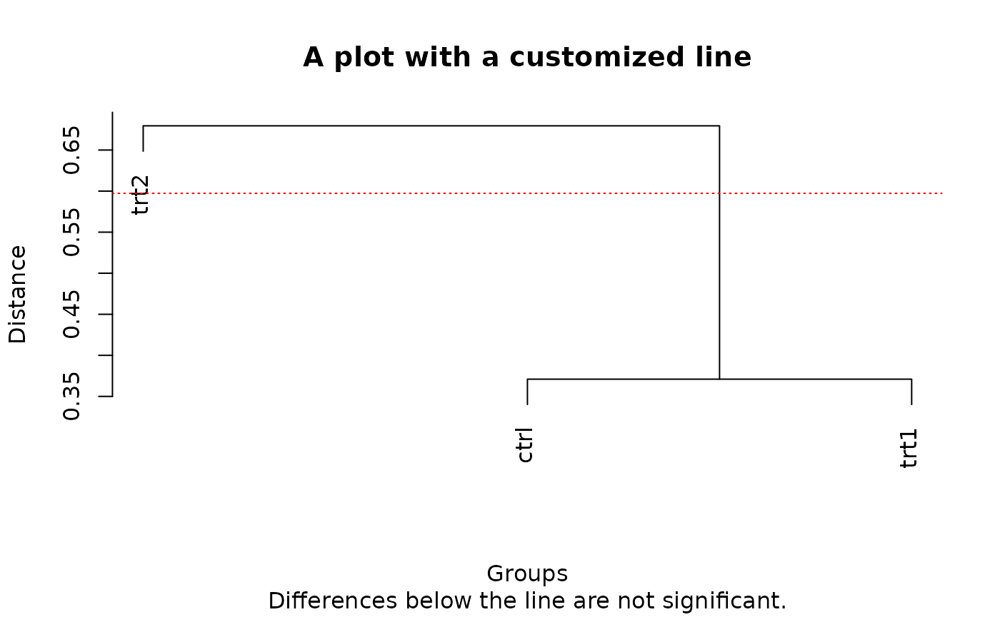
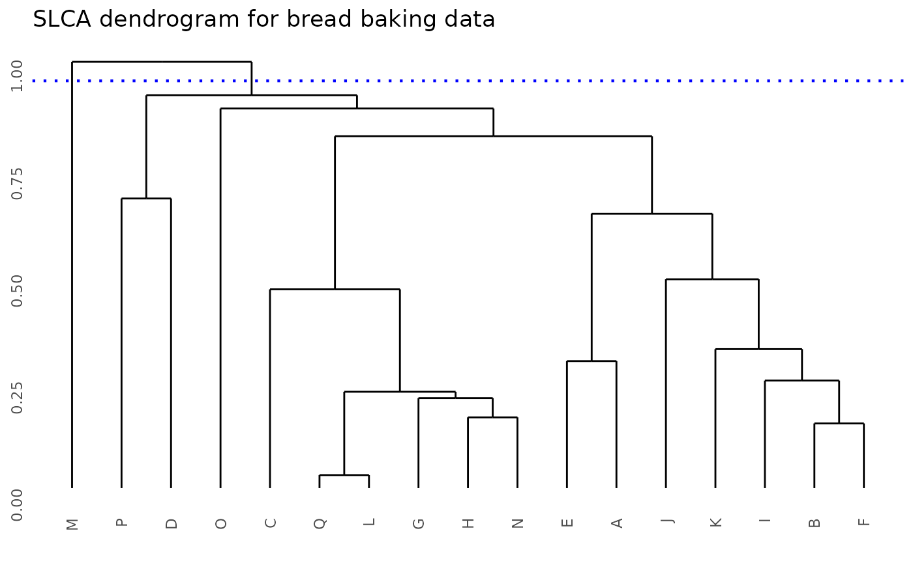

Customizing dendrograms
🇬🇧 Dendrograms can be customized, using any argument available for
the plot() function. In the following example, multiple
aspects of the figure are modified, including labels, axes and
colors.
🇪🇸 Los dendrogramas pueden ser personalizados, utilizando cualquier
argumento disponible para la función plot(). En el
siguiente ejemplo, se modifican diversos aspectos de la figura,
incluyendo etiquetas, ejes y colores.
library(ClustMC)
data(clover)
bss_test(
y = clover$nitrogen, trt = clover$treatment, console = FALSE,
main = "A customized plot", xlab = "Treatments", ylab = NULL, col = "grey50",
cex = 0.75, axes = FALSE, frame.plot = TRUE
)
Customizing lines
🇬🇧 Straight lines are created with the abline() function
and their appearance can also be customized. In this case, a
list() must be passed as an argument. The list should
contain the desired arguments and values for abline(). An
example is provided below:
🇪🇸 Las líneas rectas son creadas con la función abline()
y su apariencia también puede ser personalizada. En este caso, se deberá
proveer como argumento un objeto de tipo list(). Este
objeto debe contener los argumentos y valores deseados para
abline(). A continuación se muestra un ejemplo:
library(ClustMC)
data(PlantGrowth)
plants_weights <- PlantGrowth$weight
plants_trt <- PlantGrowth$group
dgc_test(
y = plants_weights, trt = plants_trt, console = FALSE,
main = "A plot with a customized line",
abline_options = list(col = "red", lty = 3, lwd = 1)
)
Using other packages
🇬🇧 Alternatively, the hclust object, which the functions
use to create the dendrogram, is provided to the user, enabling the use
of different libraries. In the following example, the ggdendro package is used
to plot the dendrogram with ggplot2.
🇪🇸 Como alternativa, el usuario tiene acceso al objeto de clase
hclust usado por las funciones para crear el dendrograma,
lo cual permite la aplicación de diversos paquetes. En el siguiente
ejemplo se recurre al paquete ggdendro para graficar el
dendrograma con ggplot2.
library(ClustMC)
library(ggplot2)
library(ggdendro)
data(bread)
anova_model <- aov(volume ~ variety + as.factor(bromate), data = bread)
test_results <- jolliffe_test(
y = anova_model, trt = "variety", console = FALSE,
show_plot = FALSE
)
ggdendro::ggdendrogram(test_results$dendrogram_data) +
ggplot2::geom_hline(
yintercept = 0.95, colour = "blue", linetype = "dotted",
linewidth = 0.75
) +
ggplot2::ggtitle("SLCA dendrogram for bread baking data")